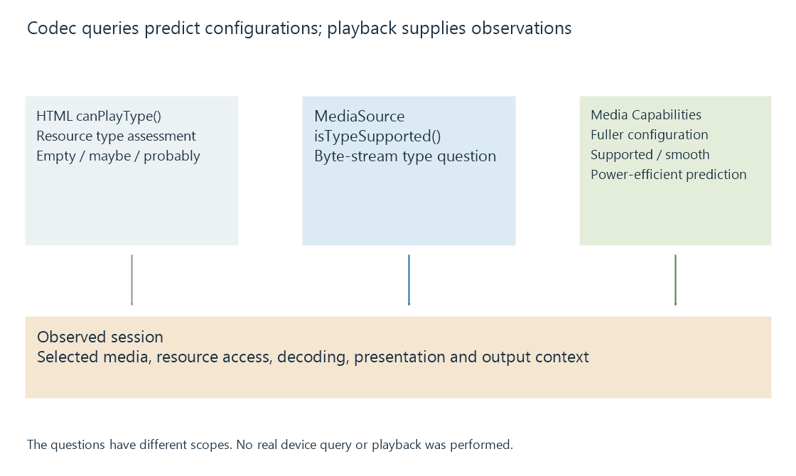

Browser codec detection and capability predictions
Browser codec detection queries a particular resource or byte-stream configuration, producing support predictions whose scope differs from observed playback.
A browser support query asks whether a described media configuration is plausible for a particular playback path. It is useful input for a web app deciding which representation to request.
The question needs enough detail to distinguish the path and the encoded configuration. “Can this browser play H.264?” leaves much of that question unspecified.
Start with the resource or byte-stream path
An original direct-resource query can look like:
document.createElement("video").canPlayType(
'video/mp4; codecs="avc1.4d401f,mp4a.40.2"'
);
canPlayType() can return an empty string, "maybe" or "probably". These express a support assessment for the described type, not a completed decoding test.
A separate MSE query asks about its appendable byte-stream path:
MediaSource.isTypeSupported('video/mp4; codecs="avc1.4d401f"');
An app must first establish that the relevant API is available. A positive result does not make arbitrary ordinary-file bytes valid MSE fragments.

A fuller configuration asks a more useful question
The Media Capabilities API describes dimensions, cadence and bitrate alongside the media type:
const prediction = await navigator.mediaCapabilities.decodingInfo({
type: "media-source",
video: {
contentType: 'video/mp4; codecs="avc1.4d401f"',
width: 1280,
height: 720,
bitrate: 2000000,
framerate: 30
}
});
This original example asks about a specific video configuration. The result includes supported, smooth and powerEfficient assessments.
| Input | Meaning in the example |
|---|---|
| type | The media-source path, rather than a file path |
| width and height | Encoded picture dimensions |
| bitrate | 2,000,000 bits per second |
| framerate | Thirty pictures per second |
The query does not measure a private media file or the current server connection. Its power-efficiency prediction is also not a live wattmeter.
These examples were not run against a particular browser or device. They illustrate the API questions; an app needs its own availability and error handling.
Keep selection and observation together
A supported video configuration does not describe a separately chosen unsupported audio track. A media-source prediction does not establish another browser's direct-resource behavior. A changed output route or application version can alter the relevant playback conditions.
For an Emby Web session, useful evidence combines the declared configuration with the selected source/tracks and the observed loading, decoding and presentation result. That gives a capability report a concrete scope.
See Also
- Client playback capabilities
- Browser media playback and its loading paths
- Media Source Extensions (MSE) and scripted media delivery
- What determines playback compatibility?
- Dropped video frames during playback